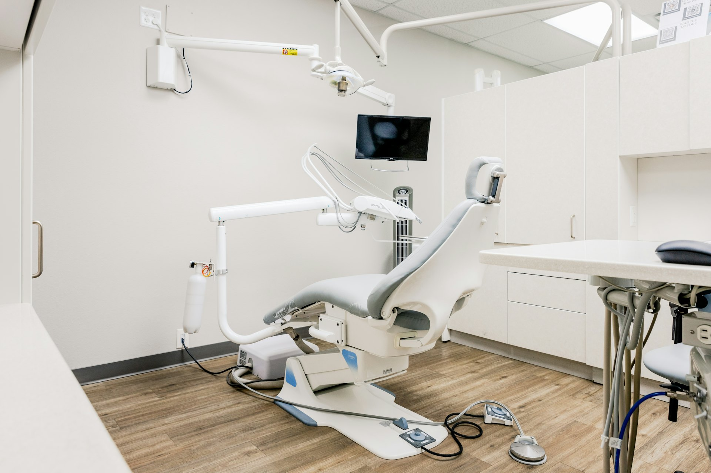
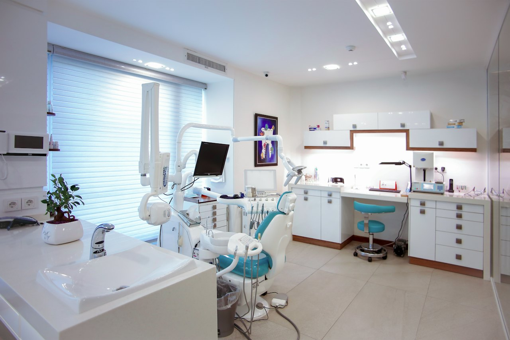
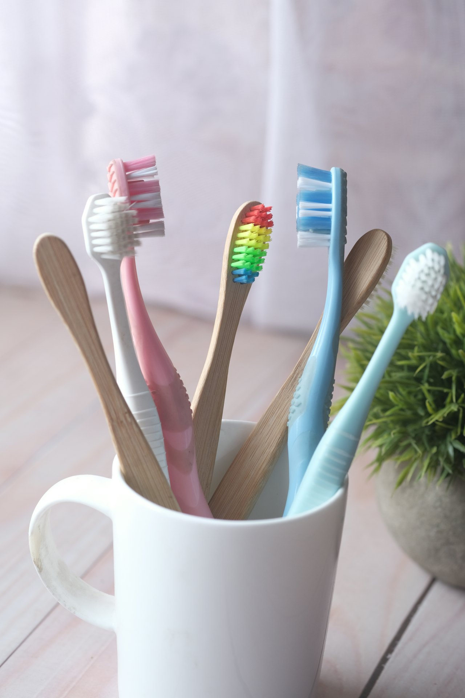

Стоматологія в Полтаві для всієї родини
Клініка «Ортаміс» на вулиці Олександра Оксанченка: лікування зубів, брекети, імплантація і дитячий стоматолог в одних стінах. Перша консультація коштує 500 грн.

Лікування зубів і ціни
Терапевт, хірург-імплантолог, два ортодонти й дитячий стоматолог приймають в одній клініці. Ціни з прайсу «Ортаміс».
- ТерапіяКарієс від поверхневого до глибокого, художня реставраціявід 1 700
- ЕндодонтіяЛікування каналів, первинне й повторне, 1–4 каналивід 2 000
- БрекетиМеталеві й керамічні системи, ціна за одну щелепувід 14 500
- Хірургія та імплантиВидалення, зуби мудрості, імплантація з протезуваннямвід 1 200
- Коронки та вініриЦирконій і кераміка E-MAXвід 8 000
- Дитяча стоматологіяАдаптивний перший візит, герметизація, метод ICONвід 500

Ортаміс
стоматологічна клініка · вул. Олександра Оксанченка, 20
Імплантація зубів за чотири кроки
Перед імплантацією обов’язково робимо професійну гігієну. Пацієнтам на імплантацію вона входить у лікування.
- 1
Консультація і КТ-знімок
Хірург-імплантолог розбирає з вами знімок і складає план: скільки імплантів, які коронки, які зуби треба підлікувати.
- 2
Професійна гігієна
Знімаємо відкладення ультразвуком і Air-Flow, щоб імплант ставився в чистий рот. Для пацієнтів на імплантацію без доплати.
- 3
Санація порожнини рота
Лікуємо карієс і канали в сусідніх зубах до того, як ставити імплант.
- 4
Імплантація та протезування
Ставимо імплант, а після приживлення фіксуємо коронку з цирконію або E-MAX.

Дитячий стоматолог без страху
Перший візит адаптивний: дитина знайомиться з кріслом і лікарем, нічого не лікуємо. Молочні та змінні зуби лікує дитячий стоматолог Олена Дорошенко, у клініці приймає логопед.
«Хто б колись подумав, що на лікування зубів діти будуть збиратися і їхати з радістю.»
Ціни без сюрпризів
Ціни на стоматологію в Полтаві у гривнях, з прайсу клініки. Точну суму лікар називає після огляду, до початку лікування.
500перша консультація
14 500металеві брекети на одну щелепу
8 000коронка з цирконію
Огляд і діагностика
- Первинна консультація500
- Повторний огляд200
- Прицільний знімок200
Гігієна
- Зняття відкладень ультразвуком1 100
- Чистка Air-Flow1 400
- Комплексна гігієнавід 1 800
Терапія
- Поверхневий карієс1 700
- Середній карієс1 900
- Глибокий карієсвід 2 100
- Художня реставраціявід 2 800
Брекети, за щелепу
- Консультація ортодонта700
- Металеві лігатурні14 500
- Самолігуючі металеві18 500
- Самолігуючі керамічні32 000
Хірургія
- Видалення зуба1 200
- Зуб мудрості1 700
- Атипове видалення2 200–4 200
- Ортодонтичний мікроімплант3 000
Коронки та вініри
- Коронка з цирконію8 000
- Коронка E-MAX10 000
- Вінір E-MAX11 000
Стоматологи клініки
Шість лікарів і логопед. У квітні 2026 лікарі «Ортаміс» були на конференції Spring Dentistry Club у Полтаві.
- Ольга ПрокопчукОртодонт, головний лікар
- Марія МазелінаОртодонт
- Яна КлимчукХірург-імплантолог
- Наталія ЯковецьТерапевт-ендодонтист
- Олена ДорошенкоДитячий стоматолог
- Анна КлименкоЛікар-стоматолог
«Лікар дуже спокійно все пояснив, без поспіху, видно що справді професіонал своєї справи.»
«Обожнюємо всією родиною стоматологію Ортаміс.»
Питання про лікування
Скільки коштує консультація стоматолога?
Первинна консультація в «Ортаміс» коштує 500 грн, повторний огляд — 200 грн. Консультація ортодонта — 700 грн.
Скільки коштують брекети в Полтаві?
Металеві лігатурні брекети — 14 500 грн за одну щелепу, самолігуючі металеві — 18 500 грн, самолігуючі керамічні — 32 000 грн.
Чи лікуєте дитячі зуби?
Так. Дитячий стоматолог Олена Дорошенко лікує молочні та змінні зуби. Перший адаптивний візит коштує 500 грн, у клініці також приймає логопед.
Як проходить імплантація?
Чотири кроки: консультація з розбором КТ-знімка, професійна гігієна (для пацієнтів на імплантацію без доплати), санація, імплантація та коронка.
Де знаходиться клініка і як записатися?
Полтава, вулиця Олександра Оксанченка, 20. Записатися можна за телефоном 099 006 89 77, прийом з 09:00.